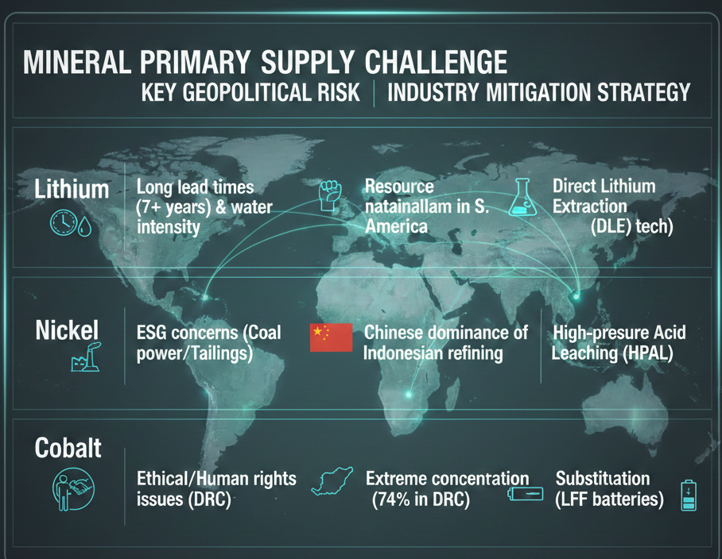
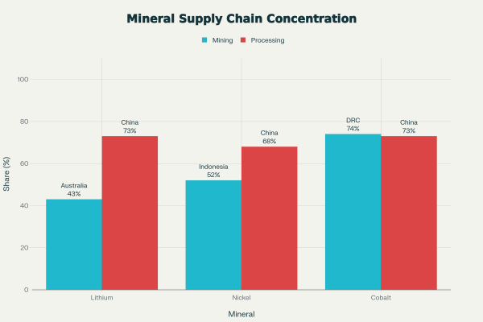
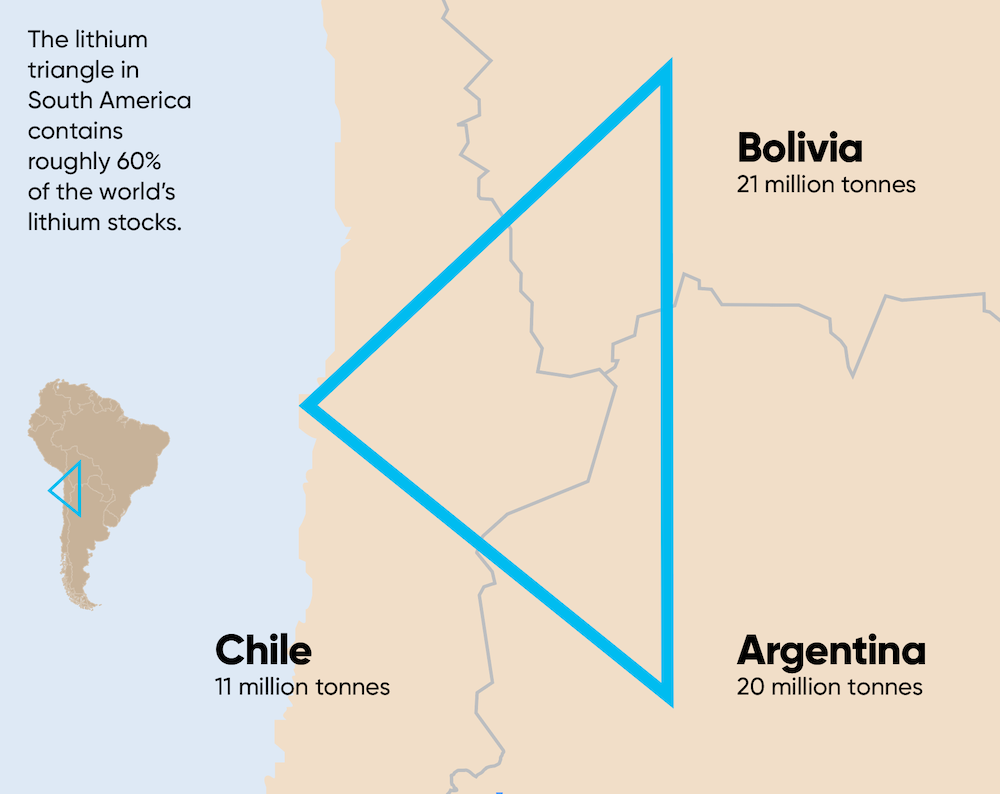
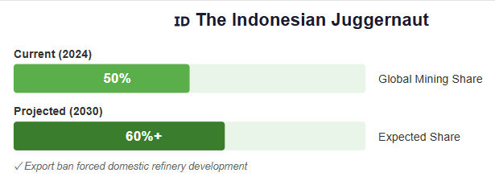
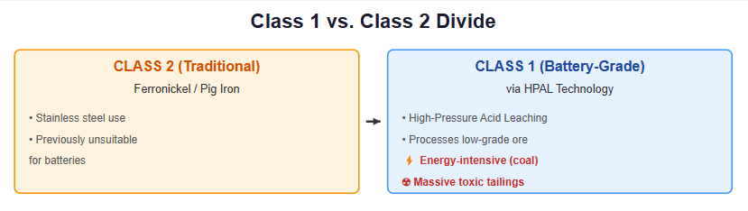
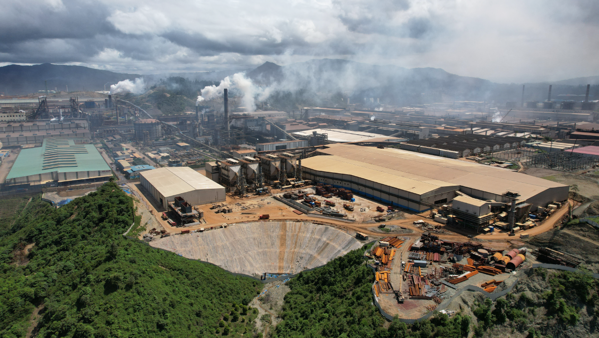
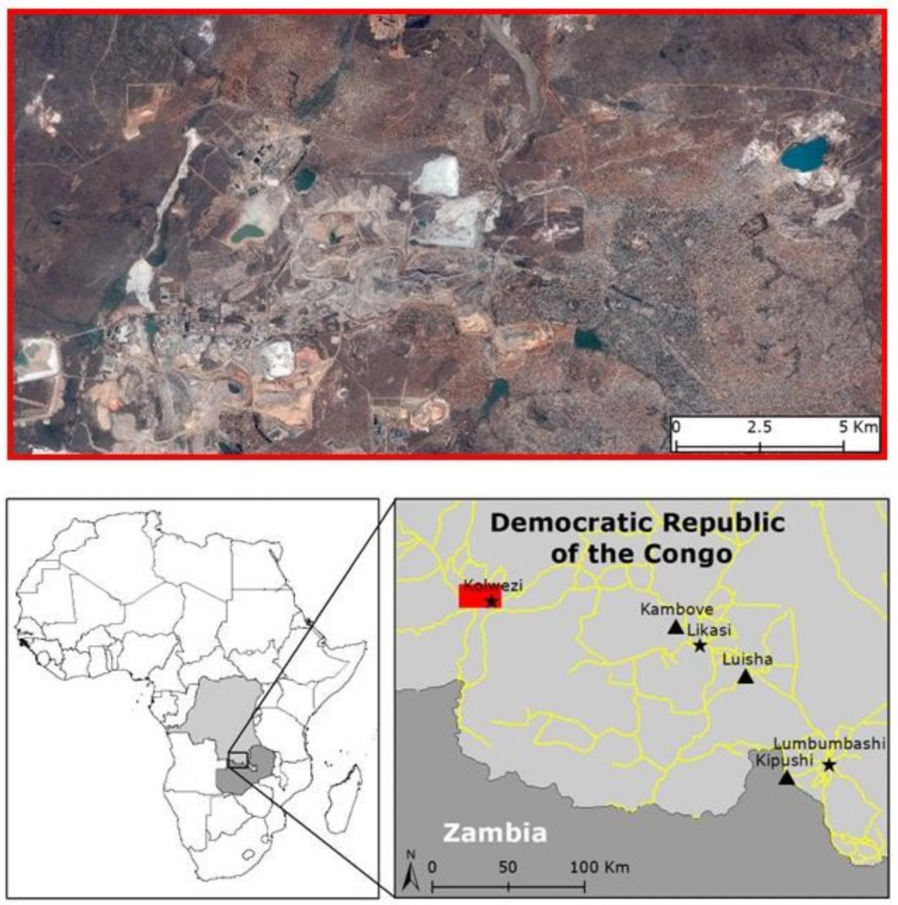
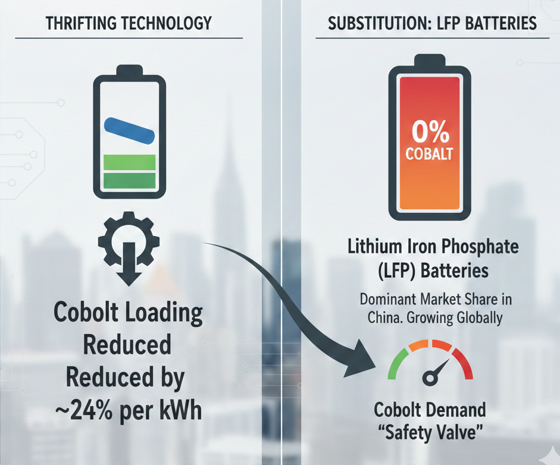
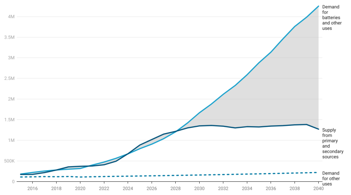
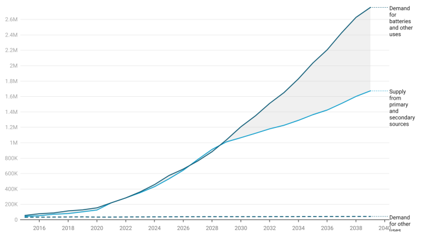

The global transition to electric vehicles (EVs) and renewable energy has triggered an unprecedented demand shock for critical minerals, specifically Lithium, Nickel, and Cobalt. While 2024 saw a temporary price collapse due to oversupply and inventory corrections, the long-term outlook projects severe structural shortages.
The core challenge is not geological scarcity but a geographical disconnect: mining is concentrated in the Southern Hemisphere (Australia, Indonesia, DRC), while refining and processing are overwhelmingly controlled by China. This centralization has created a single point of failure for global supply chains, prompting Western nations to race toward decoupling through legislation like the U.S. Inflation Reduction Act (IRA) and the EU Critical Raw Materials Act. However, long lead times for new projects and deep Chinese integration in key regions like Indonesia make this diversification slow and costly.

1. The Great Disconnect: Mining vs. Processing
The most defining characteristic of the current supply chain is the disparity between where minerals are dug out of the ground and where they are turned into battery-grade chemicals. While mining is relatively diverse, processing is a choke point.
China’s dominance in the "midstream"—refining and processing—gives it immense leverage. As shown in the chart below, even where China does not dominate mining (as with Lithium in Australia or Cobalt in the DRC), it controls the vast majority of the processing capacity required to make these minerals usable for batteries.

2. Lithium: The "White Gold" Volatility Trap
Lithium, the central component of Li-ion batteries, faces a "boom-bust" investment cycle that threatens long-term supply security.
- Price Volatility & Investment Lag: After skyrocketing in 2021-2022, lithium prices crashed by nearly 80% in 2023-2024. While this made EVs cheaper in the short term, it forced Western miners to delay or cancel new projects. Since a new lithium mine takes 7+ years to come online, this investment pause sets the stage for a severe supply crunch by 2030 when demand is projected to grow sixfold.
- The "Lithium Triangle" Water Crisis: Over 50% of the world's lithium reserves are in the "Lithium Triangle" (Chile, Argentina, Bolivia), extracted from brine below salt flats. This process is incredibly water-intensive in some of the world's driest deserts. In Chile’s Salar de Atacama, mining consumes 65% of the region’s water, leading to fierce conflicts with indigenous communities who face dried-up wells and ruined agriculture.

- Geopolitical Pivot: To secure revenue, countries like Chile have moved toward "resource nationalism," demanding state control over new projects. This complicates investment for Western firms who prefer stable, private-ownership models.
3. Nickel: The "Dirty Green" Dilemma
Nickel poses a unique challenge: the world is awash in low-grade nickel, but short on the high purity "Class 1" nickel needed for batteries.
- The Indonesian Juggernaut: Indonesia now controls over 50% of global nickel mining, a share expected to rise to 60%+ by 2030. Through a ban on raw ore exports, it successfully forced companies to build refineries domestically.

- Class 1 vs. Class 2 Divide: Historically, "Class 2" nickel (ferronickel/pig iron) was used for stainless steel and was unsuitable for batteries. New High-Pressure Acid Leaching (HPAL) technology now allows low-grade Indonesian ore to be processed into battery-grade nickel. However, this process is energy-intensive (often powered by coal) and produces massive amounts of toxic tailings.

- The ESG Cost: Producing nickel via HPAL in Indonesia generates 1.4–1.6 tons of toxic waste for every ton of nickel. Disposing of this waste in a seismically active tropical nation creates massive environmental risks, leading to the label "dirty nickel" which clashes with the "green" image of EVs.

- The "FEOC" Blockade: The U.S. Inflation Reduction Act denies tax credits to vehicles containing minerals from a "Foreign Entity of Concern" (FEOC). Since Chinese companies' control ~75% of Indonesia's refining capacity, most Indonesian nickel is currently ineligible for U.S. subsidies, forcing a complex restructuring of ownership deals.
4. Cobalt: The Ethical Minefield & The Shift Away
Cobalt is the most precarious link in the chain, primarily due to its extreme geographic concentration and association with human rights abuses.
- The DRC Reliance: The Democratic Republic of Congo (DRC) mines ~74% of the world's cobalt. Supply is frequently disrupted by political instability, infrastructure failures, and disputes over mining royalties.

- Artisanal Mining & Child Labor: A significant portion of DRC production comes from "artisanal" miners—often unregulated, dangerous operations involving child labor. This reputational risk has driven Western automakers to aggressively reduce their exposure to cobalt.
- "Thrifting" and Substitution: The industry’s response has been technological. "Thrifting" has reduced cobalt loading in batteries by ~24% per kWh. More importantly, there is a massive shift toward Lithium Iron Phosphate (LFP) batteries, which use zero cobalt. LFP batteries now hold a dominant market share in China and are growing globally, effectively acting as a "safety valve" for cobalt demand.

5. The Path Forward: Diversification & "Urban Mining"
To mitigate these risks, the global industry is pursuing a three-pronged strategy:
- Decoupling via Policy: The U.S. and EU are using subsidies to force supply chains out of China. However, the "FEOC" rules create short-term pain, as Western automakers struggle to find non-Chinese sources for refined materials.
- Technological Substitution: The rapid rise of LFP batteries proves the industry can innovate around scarcity. Similar efforts are underway to develop sodium-ion batteries, which would bypass lithium entirely for lower-range applications.
- Recycling (The Urban Mine): By 2040, recycled materials could meet 50% of cobalt and nickel demand in the EU. While the sector is currently small (~$500M in 2024), it is projected to grow at 21-28% annually, becoming a critical "indigenous" resource for regions with no natural mines.


Actionable Recommendations for Industry
- De-risk through Vertical Integration: Downstream manufacturers (OEMs) and battery producers should secure long-term, multi-year off-take agreements and strategically acquire equity stakes in new mining and processing projects. This provides crucial control over operational practices, long-term delivery volumes, and adherence to evolving ESG standards.
- Strategic Deployment of Substitution Chemistries: R&D and capital expenditure must prioritize the aggressive scaling of Sodium-ion battery technology, specifically targeting its deployment in Battery Electric Storage Systems (BESS) and affordable EV platforms. This strategic deployment of alternative chemistries must be completed before the end of the decade to successfully divert low-energy density demand away from highly constrained Li/Ni/Co resources, ensuring a more stable supply pool for high-performance applications.
- Implement Digital Traceability: Industry consortia should mandate and implement robust digital platforms capable of tracking materials from the point of extraction to the final battery component. This is essential for verifying compliance with low-carbon mandates for nickel and enforcing zero-tolerance policies regarding child labor and other human rights abuses in cobalt sourcing.